Home
News for 2008
________________________________________________
Broad- beans and shed both sprouting!
November 5 2008
The Maximum size for a building not requiring a Development Application is 25 square metres, so this shed is 5x5 metres, and going up nicely so far. No estimated time of completion as yet, it just has to be finished by the time we move:
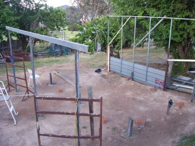
The broad beans are happy in the vegie tunnel. It's a bit frustrating that we can only be there every second weekend, but at least some infrastructure will be in place for when we move there.
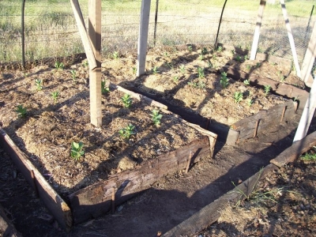
________________________________________________
Finished the Vege Tunnel!
October 7 2008
Lesley took a couple of weeks off work so we managed to have a couple of extended stays up there. Ryan spent most of the school holidays at Rye Park.
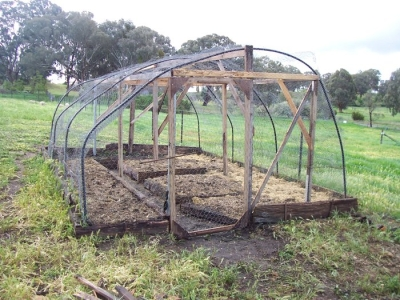
Also we made a retaining wall for where the plum trees are at the back of the house to make a bit of garden to be level with the new shed (when it goes up...)
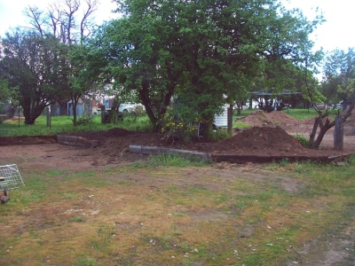Thanks to John for all the materials and building stuff we got from Canberra - it will all come in handy.
Steve and Lesley
________________________________________________
Productive Weekend
September 10 2008
Three main things achieved: First, we did some burning off, which included some old prunings from over the past year plus while doing so we cut down this huge prickly bush which had been leaning on the back fence:
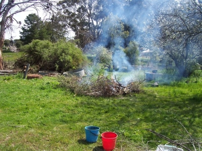Second, we got a neighbour, John, in to make a level bit of ground behind the plum trees for our small shed:
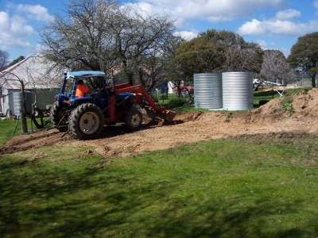
And lastly we did a bit more on the vegie tunnel. There's some incredibly rich soil up the back from an old chook-run as well as humus from under the prickle-bush and the (recently removed by Geoffrey and Alfonso over the back) tree-lucerne. We'll bring a trailer-load of it down to the tunnel:
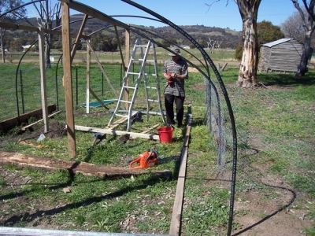Sorry we didn't get to see Vicki, Andrew & co on Sunday. Hope all the Dads had a good Fathers Day!
Steve and Lesley
________________________________________________
Vegie Tunnel Started
July 9 2008
We've just got back from a 4-dayer with Ryan, who's up for the school hols. I've started a new page on the site for the gardens,
here.
love to all,
Steve and Lesley
________________________________________________
A Brief Visit for June
June 17 2008
I've been working on weekends till May 24 June 29th So we haven't had much of a chance to get up to Rye Park. Our previous trip was on May 17-19, the 19th being Lesley's birthday. This weekend we went up on Sunday night and came back Tuesday morning. We just felt like relaxing on the Monday so we went for a walk in the morning then we lit the fire and watched Lord of the Rings.
Lesley's been really busy at work as her colleague, Hong, is off work for 2 weeks following the birth of his baby Lachlan. Once he's back Lesley hopes to get a week off so we can head for the Park for a bit longer.
Steve
________________________________________________
Not Much Done but Nice Lunch!
April 15 2008
One thing we did achieve was to finally get the gas hot water heater mostly working. We left the correct shower nozzle behind and used a smaller one which (hopefully) is why it was either fully hot or completely cold. Also connected up the grey-water output from the bath to the front garden, so our carrying of buckets is further reduced.
But the highlight of the weekend was a great get-together with Vick, John, Kate and Emma. Lesley cooked a beautiful Italian dish which everyone loved.
________________________________________________
"Tanks" Page
April 10 2008
"Moving The Tanks" now loaded to website:
oldtanks.html
And we're heading up this weekend. Hope to see you Mothers Day...
________________________________________________
No New Photos Yet
March 31 2008
Hi. We got back on Sunday after a whole week up there which was really great. We didn't get as much done as I'd hoped, but I'm always a bit ambitious. We did manage to move both of the big tanks from outside the kitchen up to the back. The larger of the two is full, but the other one had a leaky bottom, which we'll have to fix. While we had the swimming pool up to store the water while moving the tanks, we also drained the "high" tank and replaced the tap which had a big split in it from when it froze at some time in the past. We also bought an instant gas hot water heater, which turned out to be fiddly to install so we didn't get to have a shower this time - but hopefully it'll be ready in a fortnight.
We attended our first event at Rye Park on Saturday - the Harvest Festival, which was a really fun auction followed by a dinner. We met heaps of the locals and Lesley bought a whole fleece of alpaca wool for $1!
I'll put up another item here when the photos are up on the web site.
________________________________________________
Wood, Bath, Tank-Stand
March 18 2008
Hi fans. We've just got back from another visit. We bought a load of wood for the verandah from a demolition yard in Goulburn, I swung the bathroom door, I made a platform for the tanks to go on (didn't take a photo but I'll put a new page in about the Moving of the Tanks). Also we painted the bath:
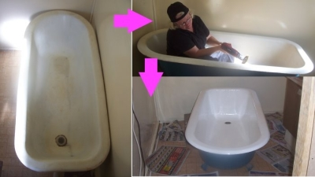
________________________________________________
New Site
February 13 2008
Here's the new Website, but I'll still be putting news in this blog...
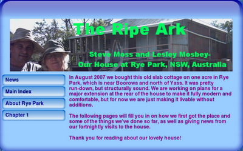
________________________________________________
How we found the house
February 7 2008
When Lesley and I first met in 2006 we found straight away that we had similar dreams about making a "tree change". Quite early in the relationship we started looking at land, mainly around the Bathurst/Blayney area. The prices were not what we could afford, but the process of looking honed our desires and got us talking about what we really wanted, and what we wanted to do with the land.
After I moved into Lesley's house in Campbelltown (from Katoomba) We concentrated on our new life together and didn't think so much about land. But after about 6 months or so we ran out of room in our little half-house and started looking for a bigger place to rent locally. We were disappointed in the prices and availability, and on a bit of a whim Lesley went back to looking for properties. She found a half-acre block in a town called Rye Park (never heard of it) near Boorowa (never heard of it) near Yass (yes! Knew Yass!). When I rang the agent, he said there was a house on an acre in the town for $60,000. It turned out that the owner had only told the agent he wanted to sell the place that same morning - it wasn't officially even on the market yet. It sounded too good to be true, but we went for a drive anyway and we were amazed at what the place was. This is how we first saw it:
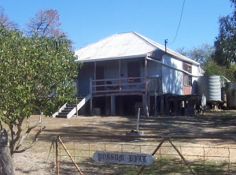
The inside was pretty bad:
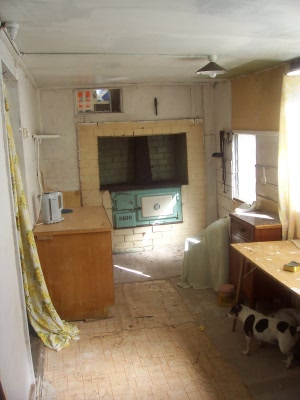
And there was a possum in residence in the bathroom...
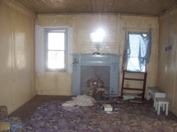
But there were plenty of water tanks:
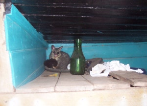
And it had phone and electricity. We could start staying over straight away. For a while it would be a bit like "camping with walls" as Lesley said, but we knew it would only be until we made some improvements, and it was a lot better than having to start with a tent.
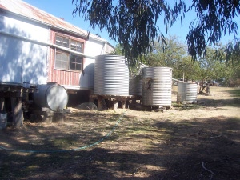
We made they guy an offer and he accepted $57,000, which the bank agreed to so it all happened!
________________________________________________
Home
House
October 2013
Asbestos
Verandah
Tanks
Fort Veg
Orchard
Pacas